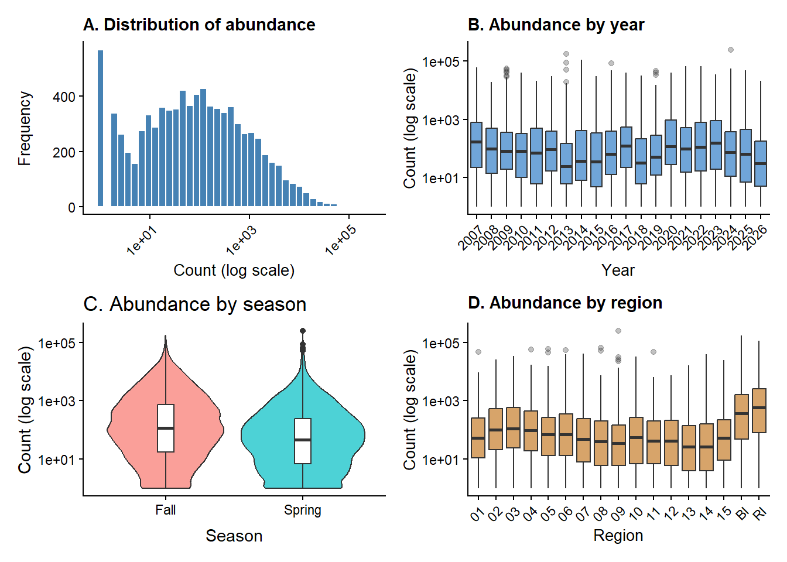
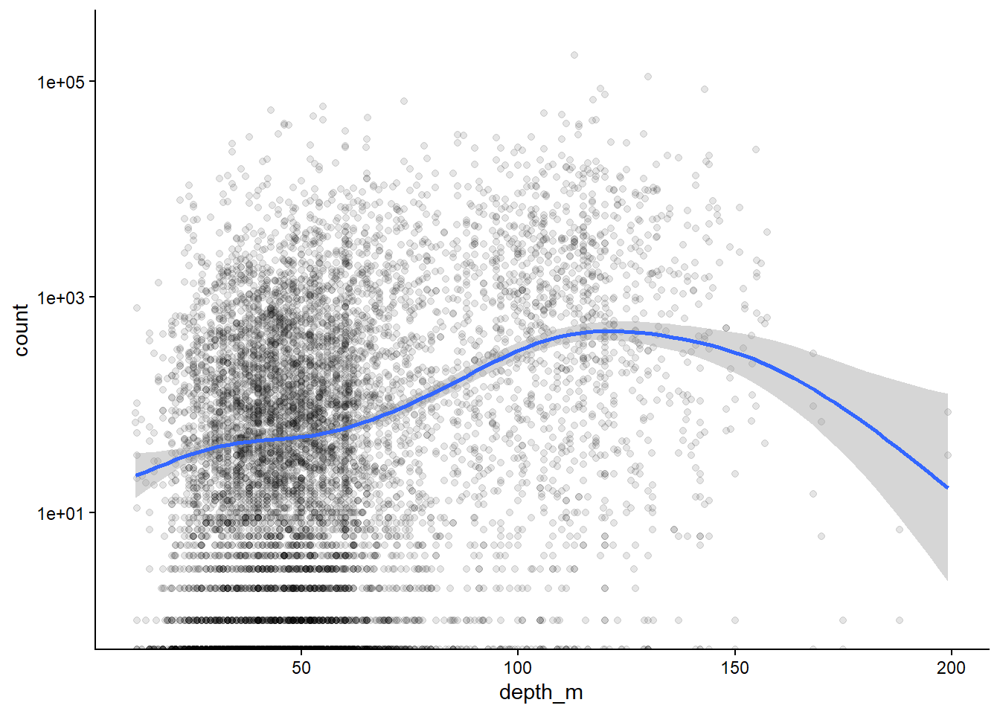
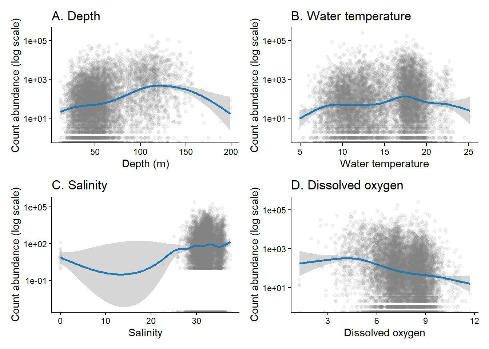
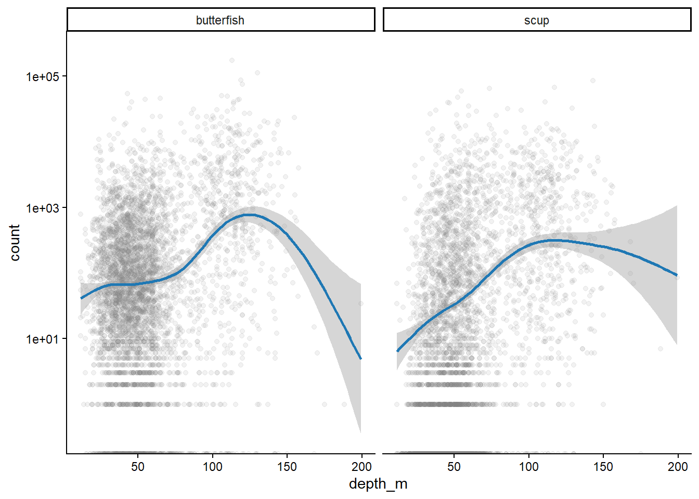

# Paste your code in here!
library(tidyverse)
library(readr)
library(glmmTMB)
library(GGally)
library(performance)
library(mgcv)ARA 669 - Exploratory data analysis and proposed analytical approach
Final Project
Each student will complete an independent project using a dataset from their own research whenever possible. Students who do not have an appropriate dataset will be provided with one.
The project is intended to mirror the statistical component of a scientific research study and will require students to integrate concepts learned throughout the course. Project components include:
- formulation of a research question, objective, and/or testable hypotheses;
- description of the study design and data with justification of design adequacy;
- exploratory data analysis;
- selection and justification of an appropriate modeling approach;
- model fitting, comparison, selection, and validation;
- interpretation of results in the context of the research question;
- preparation of publication-quality figures and tables;
- a written report in the style of a short scientific paper (approximately 4-6 pages); and
- a 3-minute lightening talk summarizing the study, analytical approach, results, and conclusions.
Projects will be evaluated on the quality of the scientific question, appropriateness of the statistical methodology, rigor of the analysis, interpretation of results, clarity of written and oral communication, and reproducibility of the analytical workflow.
To support you on this analytical journey, this project has been divided into four steps, which will all contribute to your final project grade (worth 50% of your total grade).
- Project proposal, including research question and description of dataset
- Exploratory data analysis and proposed analytical approach
- Preliminary model fits and diagnostics
- Final paper and presentation
Exploratory data analysis and proposed analytical approach
The goal of this component of the project is begin exploring your dataset and developing a plan for the analysis.
Please submit this assignment via GitHub by 12 October at 11:59pm, including the raw data, .qmd, and .html files. Be sure that the entire file runs without errors before submitting. You can create a new folder in your homework repository or create a new repository specific to the final project, whichever you prefer. This exploratory analysis, preliminary model fits (part 3), and code used for the final paper and presentation will all be submitted via GitHub.
Data exploration
Use the code chunk below to load packages and the data.
Based on your research questions, objectives, and/or testable hypotheses, develop data visualizations using ggplot2. Consider visualizations that show relationships, the distribution of the underlying data, etc. If you need inspiration, check out the R Graph Gallery. For each visualization, describe your approach: what choices did you make in deciding which variables to use, plot types, etc., and why? [2.5 pts]
This study will utilize the data collected through the Northeast Area Monitoring and Assessment Program (NEAMAP) Nearshore Bottom Trawl Survey. The NEAMAP survey started about 2007 as a fisheries independent survey which takes place in fall and spring annually. This dataset provide good opportunity to assess Butter fish (Peprilus triacanthus) and Scup (Stenotomus chrysops) for 1.annual and and seasonal abundance 2. environmental factors that enhance their abundance and 3. their spatio_temporal distribution overtime. I am going to use count as my response variable and the predictors depending on the above objectives are year, season, species, water temperature, region effect, longitude and latitute, effort as offset(log(areasw_km2).
This study will explore the following questions:
1. How does abundance change over the years. 2. which environmental variables enhances species abundance 3. how does abundance change over time and space.
Question 1 and 2 I will use General additive Model(GAMs) and question 3 I will use sndTBM model.
the preliminary exploration shows that the most variables are right skewed notably the count which range from 0 to 250000 counts. The variability is noticeable count against year, season, species, Depth. Please see the exploration plots with the categorical variables and continuous environmental variables
library(patchwork)
# Paste your code in here!
# dataset
dat <- readRDS("nemap_butter_scup_final.rds")
str(dat)tibble [10,964 × 25] (S3: tbl_df/tbl/data.frame)
$ cruiseno : chr [1:10964] "NM070901" "NM070901" "NM070901" "NM070901" ...
$ station : chr [1:10964] "NM20070901001" "NM20070901002" "NM20070901003" "NM20070901004" ...
$ towbegin : POSIXct[1:10964], format: "2007-09-28 10:21:00" "2007-09-28 07:50:00" ...
$ latitude_start : num [1:10964] 41 41 40.9 41 41 ...
$ longitude_start: num [1:10964] -71.8 -72 -72.1 -72.1 -72 ...
$ depthbegft : num [1:10964] 65 42 42 38 52 36 51 42 40 60 ...
$ region : chr [1:10964] "01" "01" "02" "02" ...
$ depthstratum : num [1:10964] 2 2 1 1 2 2 2 1 1 2 ...
$ towdisttrack : num [1:10964] 2147 2028 2439 1889 1829 ...
$ netwidth : num [1:10964] 12.9 12.4 12.7 12 12.6 ...
$ areasw_km2 : num [1:10964] 0.0278 0.0251 0.0311 0.0227 0.0231 ...
$ layer : chr [1:10964] "B" "B" NA "B" ...
$ DO : num [1:10964] 7.16 7.22 NA 7.18 6.87 7.52 7.32 6.5 7.4 6.26 ...
$ PS : num [1:10964] 89.4 92.6 NA 91.5 85.6 92.1 91.6 78.6 97.5 76.4 ...
$ SA : num [1:10964] 31.3 31.6 NA 31.5 31.6 ...
$ WT : num [1:10964] 17 18.3 NA 16.4 16.1 ...
$ vimscode : num [1:10964] 4 4 4 4 4 4 4 4 4 4 ...
$ count : num [1:10964] 60 1421 290 413 742 ...
$ Biomass : num [1:10964] 1.3 5.46 1.67 0.56 3.81 ...
$ Species : chr [1:10964] "butterfish" "butterfish" "butterfish" "butterfish" ...
$ Year : num [1:10964] 2007 2007 2007 2007 2007 ...
$ Date : Date[1:10964], format: "2007-09-28" "2007-09-28" ...
$ Time : 'hms' num [1:10964] 10:21:00 07:50:00 18:03:00 15:22:00 ...
..- attr(*, "units")= chr "secs"
$ Month_Num : num [1:10964] 9 9 9 9 9 9 9 9 10 9 ...
$ Season : chr [1:10964] "Fall" "Fall" "Fall" "Fall" ...dat_mod <- dat %>%
select(count,Biomass,Species,Year,Season, region, depthbegft, SA,WT, DO, areasw_km2,latitude_start,longitude_start, Date) %>%
mutate(Species = factor(Species),region = factor(region),Season = factor(Season),Year = factor(Year))
dat_mod <- dat_mod %>%
rename(
depth_m = depthbegft,
water_temp = WT)
base_theme <- theme_classic() +
theme(
plot.title = element_text(face = "bold", size = 11),
axis.title = element_text(size = 10),
axis.text.x = element_text(angle = 45, hjust = 1))
p1 <- ggplot(dat_mod,
aes(count)) + geom_histogram(bins = 40,
fill = "steelblue",
color = "white") + scale_x_log10() + labs(
title = "A. Distribution of abundance",
x = "Count (log scale)", y = "Frequency") + base_theme # few bars were showing show i used log10
p2 <- ggplot(dat_mod,
aes(Year, count)) + geom_boxplot(
fill = "#70A5D8", outlier.alpha = 0.3) + scale_y_log10() +
labs(title = "B. Abundance by year",
x = "Year",
y = "Count (log scale)") + base_theme
p3 <- ggplot(dat_mod, aes(Season, count, fill = Season)) + geom_violin(alpha = 0.7) +
geom_boxplot(width = 0.12, fill = "white") + scale_y_log10() +
labs(title = "C. Abundance by season", x = "Season",
y = "Count (log scale)") + theme_classic() +
theme(legend.position = "none")
p4 <- ggplot(dat_mod,
aes(region, count)) + geom_boxplot( fill = "#D7A46A",
outlier.alpha = 0.3) + scale_y_log10() +
labs( title = "D. Abundance by region",
x = "Region", y = "Count (log scale)") + base_theme
p5 <-ggplot(dat_mod,
aes(depth_m, count)) + geom_point(alpha = 0.1) + geom_smooth(method = "gam",
formula = y ~ s(x)) + scale_y_log10() + theme_classic() + theme(
plot.title = element_text(face = "bold", size = 11),
axis.title = element_text(size = 10),
axis.text.x = element_text(angle = 45, hjust = 1)) +
theme_classic()
(p1 | p2) /(p3 | p4)Warning in scale_x_log10(): log-10 transformation introduced infinite values.Warning: Removed 2466 rows containing non-finite outside the scale range
(`stat_bin()`).Warning in scale_y_log10(): log-10 transformation introduced infinite values.Warning: Removed 2466 rows containing non-finite outside the scale range
(`stat_boxplot()`).Warning in scale_y_log10(): log-10 transformation introduced infinite values.
log-10 transformation introduced infinite values.Warning: Removed 2466 rows containing non-finite outside the scale range
(`stat_ydensity()`).Warning: Removed 2466 rows containing non-finite outside the scale range
(`stat_boxplot()`).Warning in scale_y_log10(): log-10 transformation introduced infinite values.Warning: Removed 2466 rows containing non-finite outside the scale range
(`stat_boxplot()`).
p5Warning in scale_y_log10(): log-10 transformation introduced infinite values.Warning in scale_y_log10(): log-10 transformation introduced infinite values.Warning: Removed 3575 rows containing non-finite outside the scale range
(`stat_smooth()`).Warning: Removed 1500 rows containing missing values or values outside the scale range
(`geom_point()`).
# Paste your code in here!
# For continuous environmental variables
p6 <- ggplot(dat_mod, aes(depth_m, count)) +
geom_point(alpha = 0.1, colour = "grey50") +
geom_smooth(method = "gam",formula = y ~ s(x), colour = "#1F78B4", linewidth = 1) +
scale_y_log10() + labs(title = "A. Depth", x = "Depth (m)", y = "Count abundance (log scale)") +theme_classic()
p7 <- ggplot(dat_mod,
aes(water_temp, count)) +
geom_point(alpha = 0.1, colour = "grey50") + geom_smooth(method = "gam", formula = y ~ s(x),
colour = "#1F78B4", linewidth = 1) + scale_y_log10() +
labs(title = "B. Water temperature", x = "Water temperature", y = "Count abundance (log scale)") + theme_classic()
p8 <- ggplot(dat_mod,
aes(SA, count)) + geom_point(alpha = 0.1,
colour = "grey50") + geom_smooth( method = "gam", formula = y ~ s(x), colour = "#1F78B4",
linewidth = 1) + scale_y_log10() + labs(title = "C. Salinity",
x = "Salinity", y = "Count abundance (log scale)") + theme_classic()
p9 <- ggplot(dat_mod, aes(DO, count)) + geom_point(alpha = 0.1,
colour = "grey50") + geom_smooth( method = "gam", formula = y ~ s(x), colour = "#1F78B4",
linewidth = 1) + scale_y_log10() + labs(title = "D. Dissolved oxygen", x = "Dissolved oxygen",
y = "Count abundance (log scale)") + theme_classic()
p10 <- ggplot(dat_mod,
aes(depth_m, count)) + geom_point(alpha = 0.1, colour = "grey50") +
geom_smooth(method = "gam", formula = y ~ s(x),colour = "#1F78B4") + scale_y_log10() + facet_wrap(~ Species) + theme_classic()
(p6 | p7) / (p8 | p9)Warning in scale_y_log10(): log-10 transformation introduced infinite values.
log-10 transformation introduced infinite values.Warning: Removed 3575 rows containing non-finite outside the scale range
(`stat_smooth()`).Warning: Removed 1500 rows containing missing values or values outside the scale range
(`geom_point()`).Warning in scale_y_log10(): log-10 transformation introduced infinite values.
log-10 transformation introduced infinite values.Warning: Removed 2542 rows containing non-finite outside the scale range
(`stat_smooth()`).Warning: Removed 104 rows containing missing values or values outside the scale range
(`geom_point()`).Warning in scale_y_log10(): log-10 transformation introduced infinite values.
log-10 transformation introduced infinite values.Warning: Removed 2865 rows containing non-finite outside the scale range
(`stat_smooth()`).Warning: Removed 540 rows containing missing values or values outside the scale range
(`geom_point()`).Warning in scale_y_log10(): log-10 transformation introduced infinite values.
log-10 transformation introduced infinite values.Warning: Removed 2627 rows containing non-finite outside the scale range
(`stat_smooth()`).Warning: Removed 244 rows containing missing values or values outside the scale range
(`geom_point()`).
p10Warning in scale_y_log10(): log-10 transformation introduced infinite values.Warning in scale_y_log10(): log-10 transformation introduced infinite values.Warning: Removed 3575 rows containing non-finite outside the scale range
(`stat_smooth()`).Warning: Removed 1500 rows containing missing values or values outside the scale range
(`geom_point()`).
Add additional code chunks as needed so each graph shows up after the code used to generate it.
Proposed analytical approach
Considering the study design and data, and your research questions, objectives, and/or testable hypotheses, describe your proposed analytical approach. Include your response and predictor variables, type of analysis (linear regression, generalized linear regression, gam, etc.), model selection criteria, etc. Provide sufficient detail to evaluate your proposed approach in the context of your data and questions of interest. If you have questions or uncertain about anything, highlight that here as well. [2.5 pts]
May dataset shows alot of variability,skewness and non linearity. Base on these I will be exploring the GAM model to see effects of these variables against the count data. For objective one which is the catch standardization the analytical approach would be count as response with the following predictors : Year, Season, Region, Species, Depth, Temperature (WT), Salinity (SA) and Dissolved Oxygen (DO) using GAMS as a model tool.
The 2nd objective is on Habitat suitability focusing on temperature, DO, salinity and Depth while count us as response. Due to the nonlinearity of the predictors I will use GAMS as modelling choice. As most of my predictors the edf >6 and GAMS are great way to explore non linearity among predictors.
The 3rd objective is Spatiotemporal distribution to accounts for spatial and temporal abundance for counts of fish along with lon,lat,year, region and season. The sdmTMB model will be use to count for the spatiotemporal variations.
The following are for null hypothesis of this project : • Annual and seasonal abundance and biomass do not differ across years. • Environmental variables do not influence suitability in habitats. • Species distributions remain constant across years and seasons.
Exploratory visualizations indicated substantial variability and right-skewness in count abundance, with values ranging from 0 to approximately 250,000 individuals. Relationships between abundance and environmental predictors were often nonlinear, particularly for depth, temperature, salinity, and dissolved oxygen, which motivated the exploration of GAM-based approaches.
AI statement
If you used AI for this assignment, please describe your use, including:
1. What tool or service did you use? I Use copilot
2. What was the specific purpose or use? for enhancing my graphs
3. How did this use enhance your understanding of the topic/code? I find it very helpful for coding and codetrouble shooting